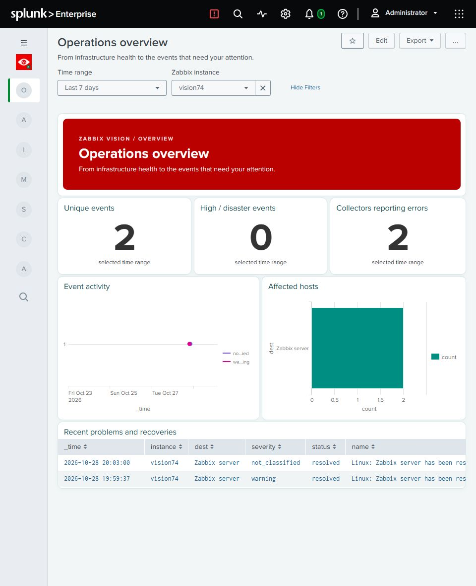
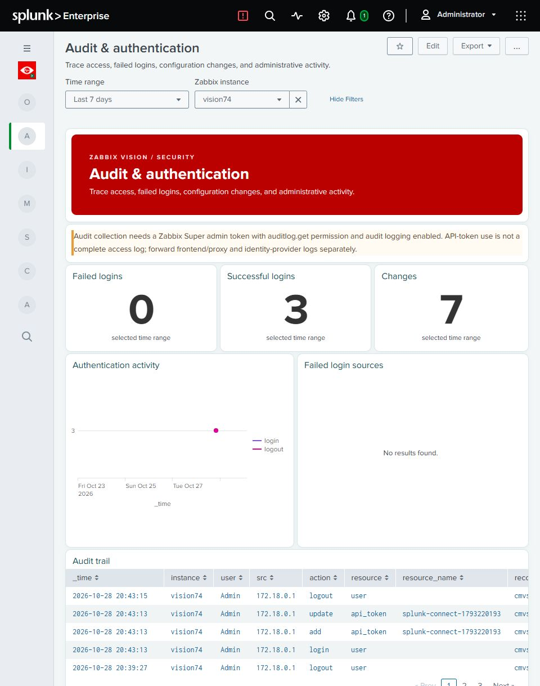
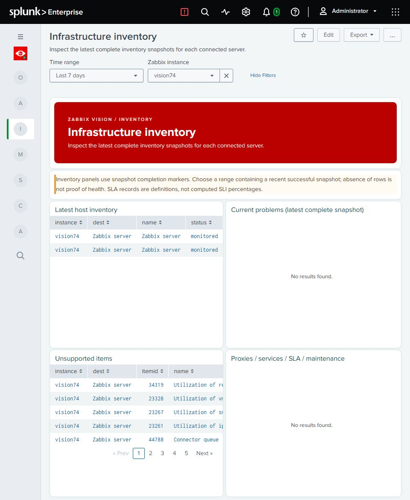
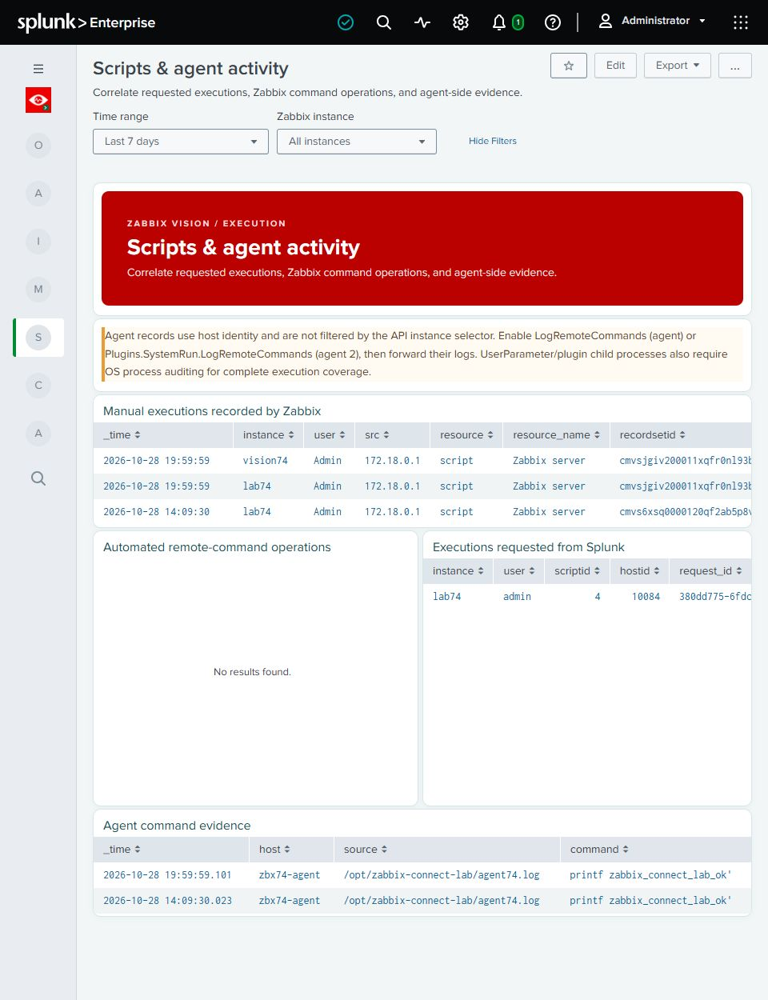
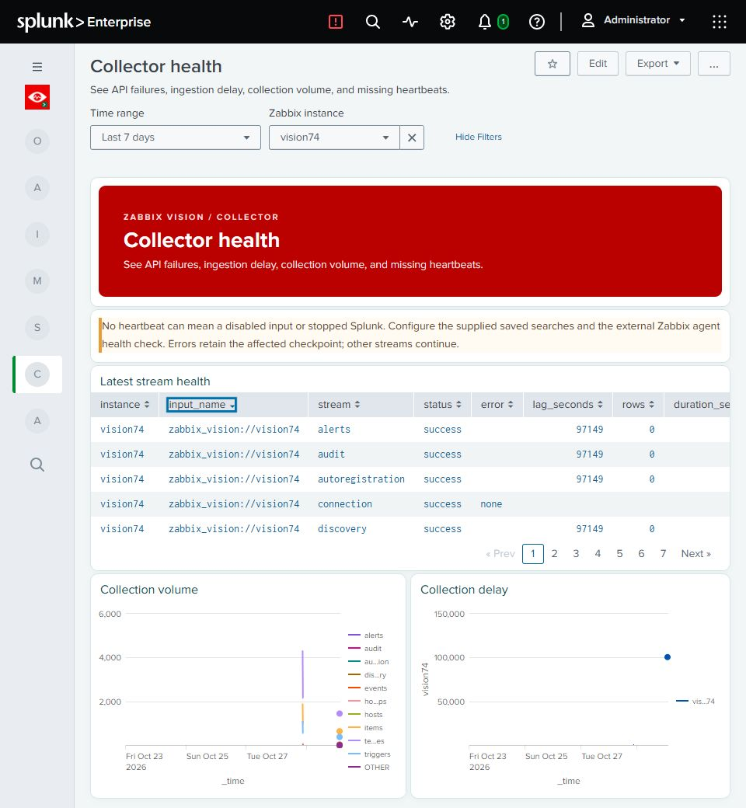
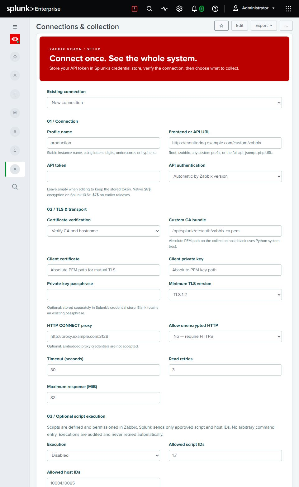
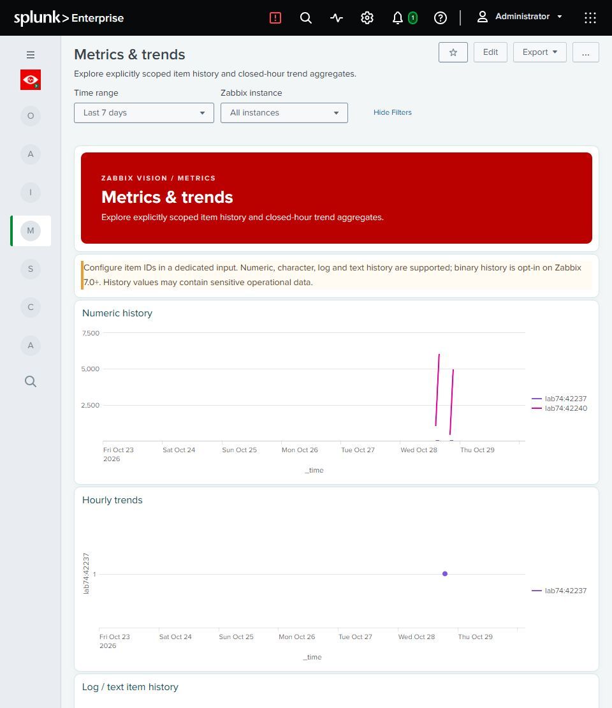

Splunkbase media kit · 1.0.0 beta · Captured 30 October 2026
Real Splunk Enterprise 10.4.1 screens. Click any image for full detail. Read captions and test-data context before publishing. Previews are letterboxed, proportionally reduced captures; no data is altered.

Full PNG · 623 × 350 preview





